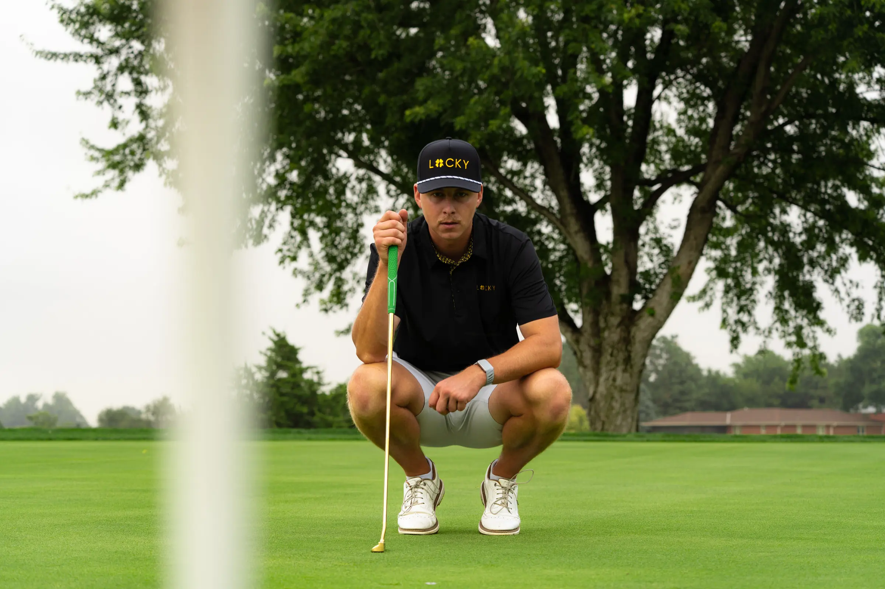
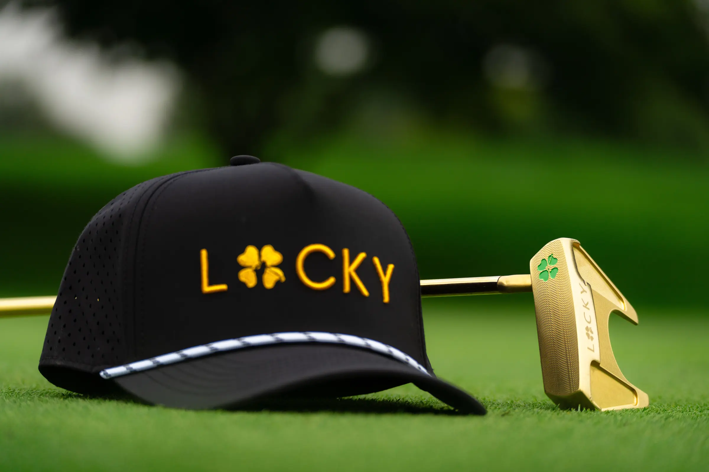
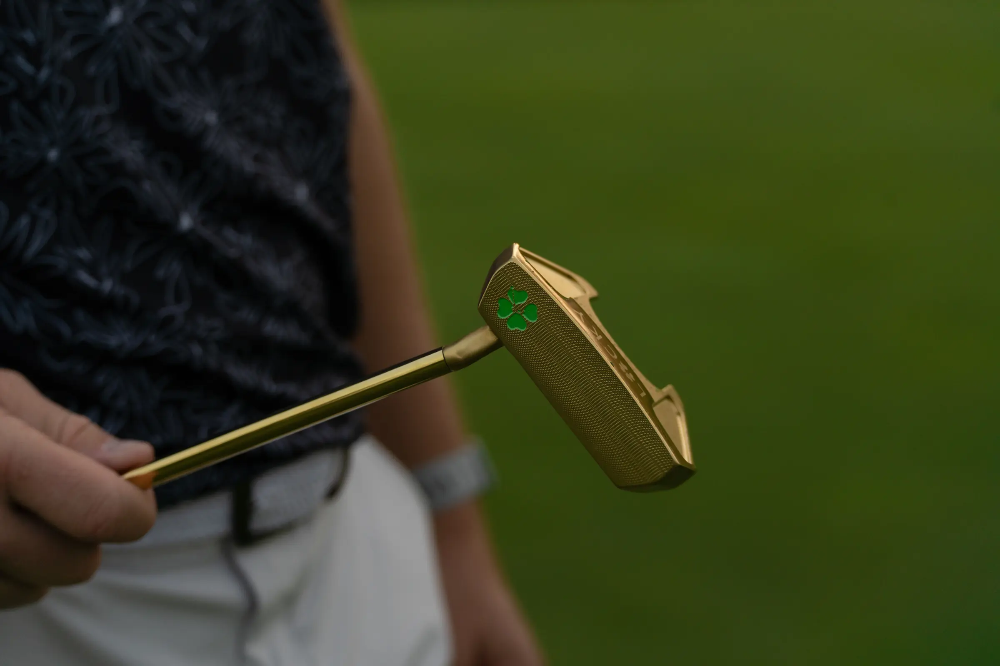
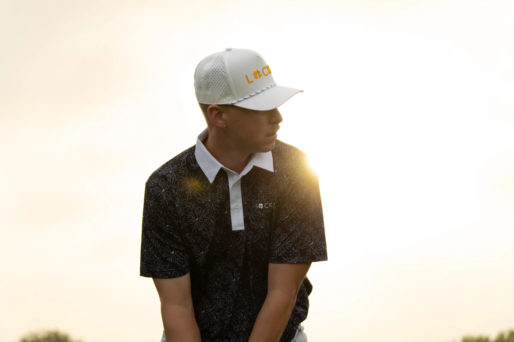
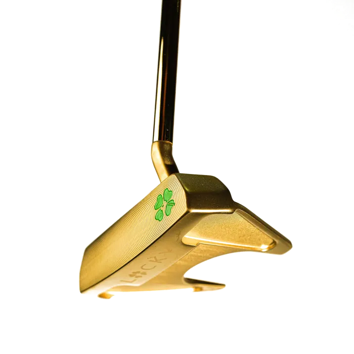
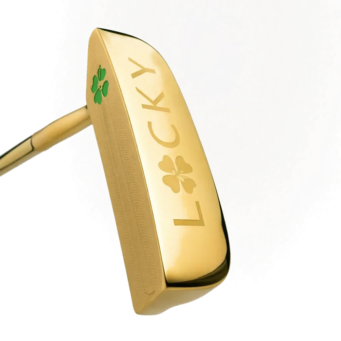

The one system every page is built from
Photos lead. Gold points. Mags gets you there.
Everything here is live code from lucky.css and lucky.js. Flip the ground and the device above: every piece should still hold.
Colour
One dark. One accent. A lot of white.
Daylight is the whole site. Twilight is for short events, or one band on a white page. The components never change between them; the tokens do.
#FFFFFF · most of every screen#F4F3F0 · product wells, cards. Never a band#17140F · all type on white, and black Mags#0B2E1F · bar, header, one band, footer#06110B · Twilight's page, events only#C29A2B → #EDD27C · one button, one word per screen#8A6A1C · on white, any size. 5.05:1#EDD27C · type on dark only. Never on white#008340 · in stock, verified. Not "added"#0B5130 · inside the logo. Nowhere elseType
Archivo. Nothing else.
Three registers: condensed caps for display, tracked caps for labels, plain for reading. No em dashes, no exclamation marks.
Golf has a dress code. Ours is gold.
Square it up, or open it up.
Carver 01 Gold
$99 · 56°
Start here
Same steel as the big names, minus the tour contracts and the retail rent.
Body copy sits at 17px, ink at 70%, 46 to 62 characters a line. It talks like a person who plays, to a golfer who already knows the game.
Nobody needs a gold wedge. That is rather the point.
Buttons
One gold button per screen.
Rule The foil goes on the action we most want on that screen. Everything else is the ghost. "Added" turns ink, never green.
On deep green: same buttons, the ghost flips to cream.
Chips, tags, swatches
The stamp.
Rule Condensed caps, 44px tall on a phone. A value you can't buy is dashed and struck, never faded out of reach.
Photo hero
Every page opens on a photo.
Rule Real people, real course, real gold. Headline bottom-left over the scrim. --focus sets the crop for desktop, --focus-m for phones.

One week only · Ends Friday
$90 gets the hat. $140 gets the fit.
The fit's a hat and a polo, both on us, both your pick.
Photo band and frames
A photo beat every couple of sections.
Rule The shoot is 3:2, so the tiles are 3:2. Never a tall crop of a wide frame. A photo beside text uses .lg-split + .lg-frame.


The fit
Shown worn, not floating on a tile.
Cutouts are for choosing: cards, pickers, the cart. Photos are for wanting. Apparel is always on a person; clubs are always on the course.

Product cards
Product sits on stone.
Rule Studio cutout on the stone tile, name and real price, one line a buddy would say. .is-cut multiplies the white away. The compact spec strip (HUD) can sit under the line.

Hat + polo freeTracer Mallet$229Lines up so easy the four-footers get boring.
Hat + polo freeStryker LGH01$209Way easier to hit than your 3 wood.Personality
Yardage: the golf instruments.
This is where the personality lives, next to Mags. Each piece reads a real number the way golf reads it: a hole, a launch monitor, balls around a cup. They replaced the pinstripe. The rule: a piece only shows up where it has a real number to show, so they season a page and never cover it.
- Hole barIn the systemCart free-shipping bar, any "spend $X" promo
- Tracer (ball flight)In the systemPromos and launches, once, between the offer and the products
- Launch monitor AIn the systemProduct pages: the full readout
- HUD strip (monitor B)In the systemProduct cards, cart lines, sticky bars
- Review proximity AIn the systemEvery reviews block
- Section numbersIn the systemLong pages: promos, story, guides
- Tick rulerIn the systemA divider when a section needs one
- Contour mapIn the systemOne per page, behind a quiet section with no photo: the FAQ, "why the price", a spec block
- Loft chart, spec card, elevation bands, dot matrix, terrain, ridgelines, other review chartsOn the benchAds, technical pages, the app. Kept in the Yardage library
Every club gets you the hat. Start with one.
$0Manufacturer spec sheet, 2025-11-13. Never a made-up number.
Put .lg-numbered on a promo, story or guide and the eyebrows count like holes: 01, 02, 03. This page is numbered that way.
Contour map
One big map of a green. Every section that uses it shows a different part, so it never repeats. One per page, behind a quiet section with no photo, fading in on one side and staying out from behind the words. The base map gets swapped for the final artwork when it lands.
Same map, another spot
And another, mirrored
Reviews
Real ones, word for word.
Rule Verbatim from Judge.me, typos and all, with the customer's real name, or nothing. The proximity chart is drawn from the real Carver 01 Gold counts (650), average rounded down.
Overheard
People keep borrowing them.
People borrow it in my league- it’s a winner!
This club is MONEY!!' Please make a 3 wood!
Amazing Putter and looks awesome
FAQ
Before you ask
Can I pick the colour of the free hat?
Yes. Pick it by picture right on the page, then it goes in your bag at $0.
What if I return the club?
The free stuff is yours to keep once the order ships.
Does it stack with other codes?
One offer per order. The gifts come off automatically.
Mags
He has a job: getting you to checkout.
Rule Black Mags on light, light Mags on dark, never a third colour. Guide card, pop-up, sign-off, empty bag, 404, good news, the bag button. Never on an error.


On the page: follows the ground.
On deep green: switches to light.
Close the pop-up and watch it shrink into Mags.
Every page ends here
It's better to be lucky.
Legend has it Mags hasn't paid for a hat in years. He's not telling us how.
Pick your clubPage recipes
What goes where.
Every page, top to bottom. Bold lines are photo beats. At most one dark band on a white page, and the page always comes back to white.
Home
- Announcement bar, header
- Photo hero
- Trust row
- The clubs: product cards
- Photo band
- Why the price: split with a frame
- Reviews on a photo
- Apparel, worn
- Mags sign-off
- Footer
Collection
- Header
- Short photo hero
- Filter chips
- Product cards with HUD
- Photo band after row two
- Compare table, contour behind
- Review score
- Mags sign-off
Product page
- Header
- Gallery: studio + on course
- Buy box: chips, foil Add to bag, stock
- Spec tiles
- Split: in use
- Review score + real quotes
- FAQ, contour behind
- Mags sign-off
- After add: Mags guide to checkout
Promo / landing
- Numbered page
- Photo hero with the offer
- Sticky hole bar
- Tracer, once
- Product cards
- Photo band
- Gift panels + a worn frame
- Reviews on a photo
- FAQ + frame
- Mags sign-off
- Mags guide + pop-up
Our story
- Numbered page
- Photo hero
- Splits, alternating
- Photo band
- One band: the quote
- Timeline, contour behind
- Mags sign-off
Cart, 404, empty bag
- Hole bar to free shipping
- Lines with the HUD strip
- Foil Check out
- Empty bag: Mags + one line + a ghost button
- 404: Mags, one line, two buttons
Rules
Do, and don't.
- Open every page on a real photo, and keep its shape.
- Put the foil on the one action you most want.
- Let Mags say the next step, and do it when tapped.
- Show a number only if it's real, and round counts down.
- Keep floating things off the bars and the buy button.
- Label a missing photo with its shot brief.
- No em dashes, no exclamation marks, no invented reviews.
- No green for "added". Green means in stock or verified.
- No light gold as type on white. No gold type on clover green.
- No shadows on things in the page. Only things that float.
- No two dark bands in a row. No dark page outside an event. No pinstripe: it's retired.
- No quantity steppers on clubs. One tap, one club.